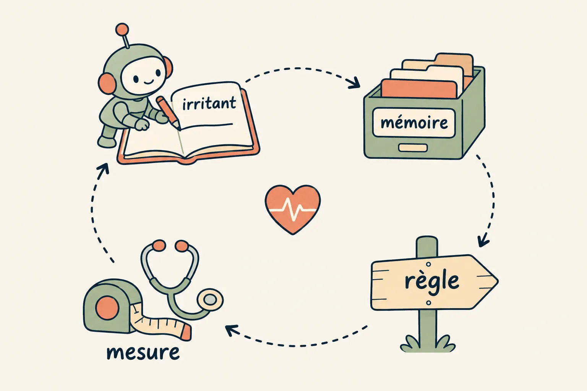
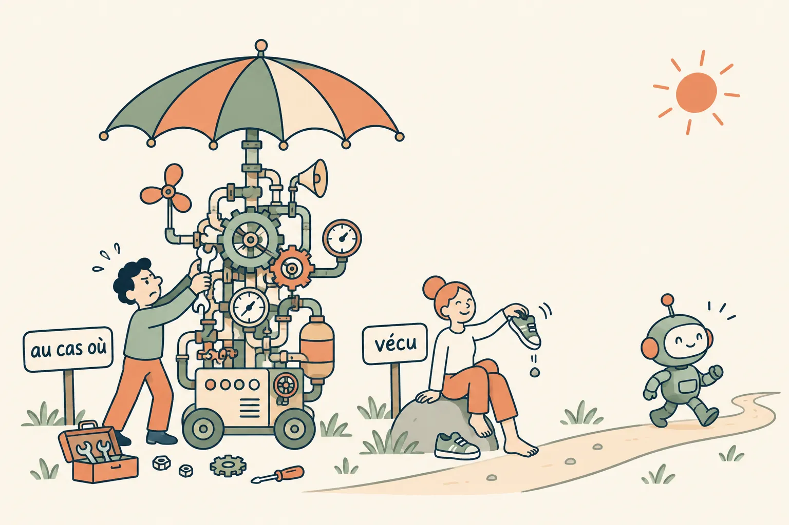
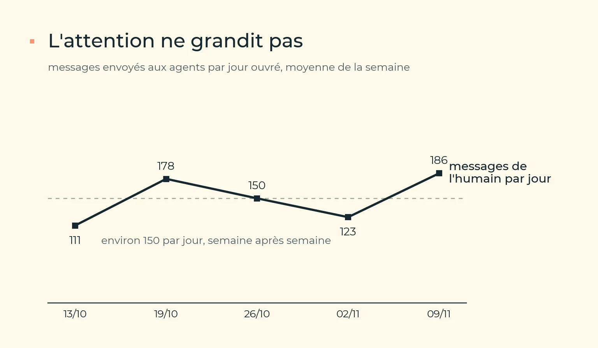
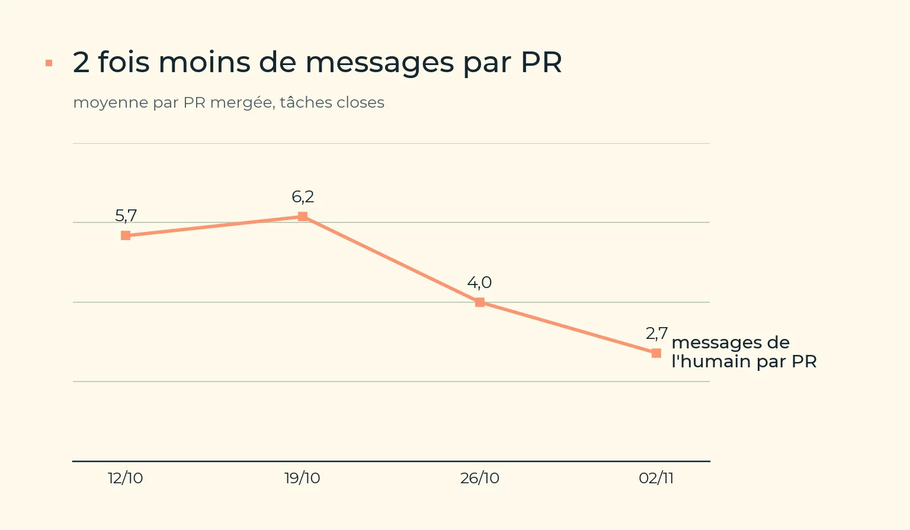
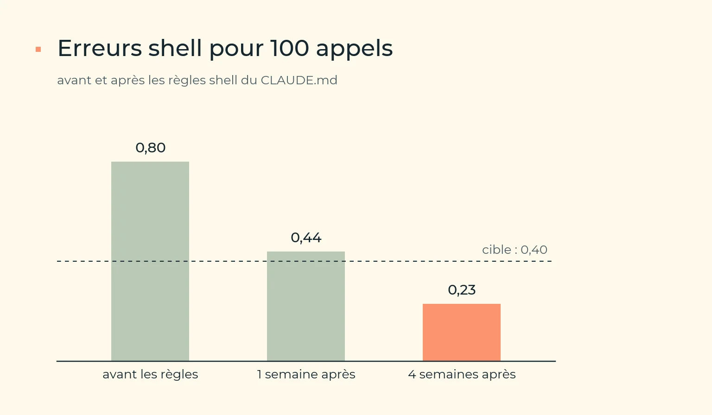
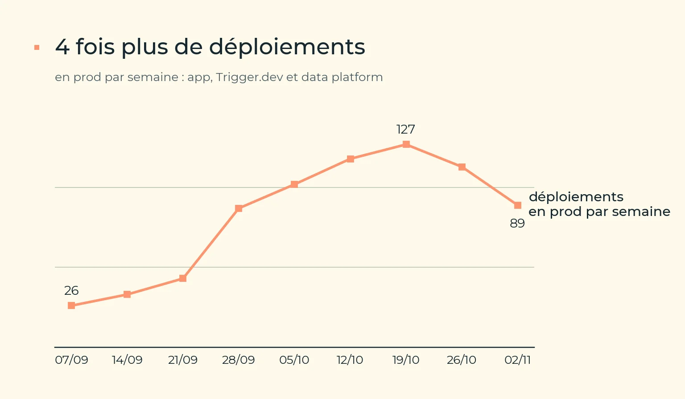
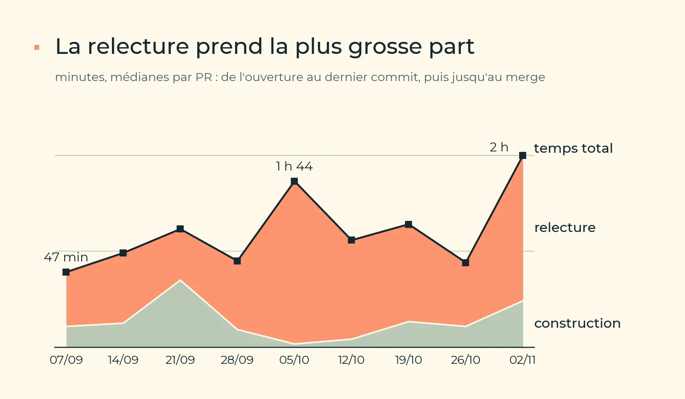
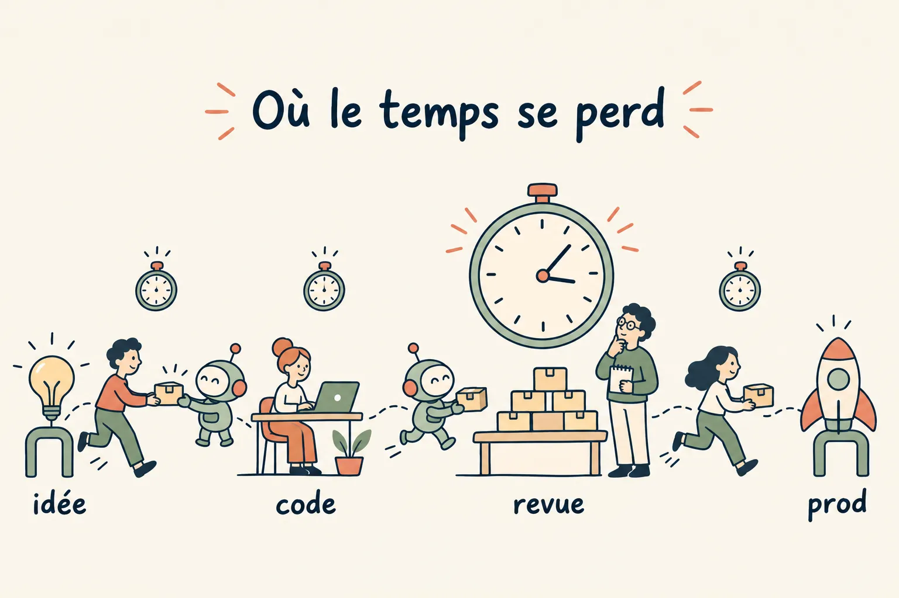

Prendre le pouls : les frictions, puis le flux
Prendre le pouls de l'équipe, c'est répondre à 2 questions. Où l'outillage fait-il perdre du temps au quotidien ? Et combien de temps une idée met-elle pour arriver en prod, avec combien d'échecs en route ? La première se mesure par les frictions des sessions, la seconde par les métriques DORA.
La méta-boucle : de l'irritant à la règle
- Un journal des irritants. Dès qu'une session perd du temps sur l'outillage, elle y ajoute une ligne : date, symptôme, correctif, projet. On le lit en premier quand l'outillage casse sans raison apparente.
- Une mémoire quand l'irritant revient une deuxième fois, ou que sa cause est durable : le fait, le pourquoi, comment l'appliquer.
- Une règle, un garde-fou ou une procédure dans le dépôt quand la mémoire vaut pour toute l'équipe.
- Une mesure avant et après, avec une date de remesure.

Le journal est un fichier global à toutes les sessions, ~/.claude/papercuts.md, que l'agent remplit lui-même sur consigne des instructions globales, la ligne la plus récente en tête. Il a reçu une quarantaine de lignes le premier mois, et plusieurs nous ont déjà évité de déboguer 2 fois le même problème.
Laisser la douleur arriver avant de la traiter
Le code tend vers le désordre, comme l'entropie en physique. L'intention lui donne une direction, le réel le corrige. Laissé sans contrôle, il grossit et s'éloigne de ce qu'on voulait. Chaque développement reste donc pragmatique, ancré dans le réel.
La méta-boucle part ainsi d'un irritant vécu, jamais d'un irritant imaginé. C'est un choix : on ne construit rien contre une douleur future.
- Une douleur anticipée est mal spécifiée. Tant qu'elle n'est pas arrivée, on ignore où elle tombera, à quelle fréquence et ce qu'elle coûtera vraiment. Une solution construite d'avance répond souvent à une autre question que celle qui finira par se poser.
- La sur-ingénierie ralentit. Chaque abstraction, option ou garde-fou ajouté « au cas où » doit être lu, testé et maintenu, et allonge dès maintenant, pour tout le monde, le chemin de l'idée à la prod. Ce coût-là est certain, alors que le bénéfice reste hypothétique.
- Une douleur réelle se corrige vite. Quand elle arrive, on a le symptôme, le contexte et un exemple concret, donc un diagnostic court et un correctif ciblé. Avec des agents qui ouvrent une PR dans l'heure, attendre ne coûte presque rien.
- On corrige simplement la première fois, on durcit ensuite. Si le problème revient, il devient une mémoire, puis une règle ou un garde-fou. On n'ajoute de la structure qu'après une répétition.

La limite : ce qui est irréversible ou touche la sécurité (une suppression en prod, une fuite de données, un accès trop large) ne s'apprend pas par la douleur. Là, les garde-fous se posent avant (Garde-fous). Pour tout le reste, laissez vivre la douleur et réagissez ensuite.
Mesurer les frictions des sessions
L'attention est tout ce qu'il nous reste. Les modèles et la puissance de calcul grandissent chaque mois ; le nombre de messages qu'un humain peut envoyer à ses agents dans une journée, lui, ne grandit pas. Il faut donc minimiser le nombre de messages par PR : moins de relances, moins de commandes à lancer à la place de l'agent, et des demandes qui aboutissent du premier coup. C'est la première chose qu'on mesure.


! à la place de l'agent, par tâche, sur les mêmes semainesLes transcripts des sessions d'agent se mesurent comme n'importe quelle donnée. Un script les relit et compte les frictions par famille, pour 100 appels d'outils, afin que la mesure ne dépende pas du volume de travail :
- commandes refusées, par règle ou par garde-fou, avec leur motif ;
- erreurs d'outillage : chemin introuvable, motif de recherche vide, attente bloquée ;
- refus du classificateur de permissions, séparés de ses échecs transitoires ;
- demandes d'autorisation approuvées par l'humain, que les transcripts n'enregistrent pas : un hook les journalise à part, sans jamais rien décider.
3 précautions comptent. D'abord, ne retenir que les tâches closes (sans activité depuis 2 jours), sinon les semaines ne se comparent pas. Ensuite, versionner les scripts de mesure avec leurs tests, pour que tout le monde mesure avec la même définition. Enfin, séparer le travail de l'entreprise de celui des projets personnels ouverts sur la même machine : sans filtre, ces sessions gonflent le volume et brouillent la comparaison d'une semaine à l'autre. Une automatisation hebdomadaire compare les 2 dernières semaines closes et poste la synthèse sur la tâche concernée.
Mesurées sur un seul poste, les frictions restent une anecdote : elles décrivent une manière de travailler, pas l'outillage de l'équipe. Mais une mesure ne se partage que si elle ne surveille personne. Chacun envoie sa semaine sous forme de comptes, jamais le contenu de ses sessions, et voit ce qui part avant l'envoi ; la vue d'équipe additionne, sans chiffre ni classement par personne. C'est à cette condition que chacun accepte d'envoyer. en place

Le flux : les métriques DORA en place
Les frictions de session montrent où l'outil frotte, mais pas si l'équipe livre plus vite et plus sûrement. Pour ça, il y a les indicateurs DORA, issus de 10 ans de recherche sur des dizaines de milliers d'équipes. Leur résultat principal : vitesse et stabilité ne s'opposent pas, les meilleures équipes sont bonnes sur les deux. Les indicateurs vont donc par paire, pour qu'on ne puisse pas améliorer l'un en sacrifiant l'autre : 2 de vitesse, 3 de stabilité.
| Indicateur | Ce qu'il mesure | Où le lire, en général |
|---|---|---|
| Délai de mise en production | Vitesse : du début de la tâche au code en prod. | Événements de la forge (commit, PR, merge) et horodatage du déploiement. |
| Fréquence de déploiement | Vitesse : combien de mises en prod par semaine. | L'étape de déploiement réussie de la CD (Branches). |
| Taux d'échec des changements | Stabilité : part des mises en prod réussies qui ont cassé quelque chose. Une CD rouge n'en est pas une : rien n'est parti en prod. | Un incident dans les 7 jours, dont le correctif touche les mêmes fichiers, ou le revert de l'une des PR livrées. |
| Temps de rétablissement | Stabilité : de la panne au retour à la normale. | De la première alerte au merge du correctif (Humain sur la boucle). |
| Taux de reprise | Stabilité : part des PR mergées qui ne font que reprendre une PR récente. Il compte des PR, là où le taux d'échec compte des mises en prod. | Reverts, correctifs d'incident, et correctifs qui touchent les fichiers d'une PR mergée dans les jours précédents. |
3 règles de comptage évitent de se raconter des histoires :
- Compter ce qui a vraiment tourné. Un merge n'est pas un déploiement : une CD qui ne livre que ce qui a changé ne déploie pas à chaque merge. On compte l'étape de déploiement réussie, et chaque déploiement livre tous les commits depuis le précédent.
- Une panne n'est pas forcément causée par un changement. Elle ne compte dans le taux d'échec que si un correctif lui est rattaché ; les autres sont listées à part. Et une même panne vue par plusieurs sources ne compte qu'une fois.
- Toujours à l'échelle de l'équipe, jamais par personne, et chaque indicateur de vitesse affiché à côté de son pendant de stabilité.
Chaque lundi, une routine publie les 2 familles, frictions et flux, sur une même page, avec un verdict et un levier pour la semaine. Le compte rendu part aussi dans le canal d'atelier de l'équipe, avec les propositions en fil, une par message : chacun réagit sur celle qu'il veut prendre.


On n'en attend pas un score, mais une décomposition qui montre où le temps se perd entre l'idée et la prod. Les 2 premiers constats :
- L'attente de revue. Presque tout le délai se passe entre le dernier commit et le merge, et l'attente d'une approbation humaine en est une bonne part, maintenant que les agents ouvrent plus de PR qu'un humain n'en relit (Charge cognitive).
- La reprise. Elle a grimpé 5 semaines d'affilée, jusqu'à une PR sur 3, avant de redescendre à moins d'une sur 5. La hausse venait surtout de parcours d'ingestion cassés par des changements chez les fournisseurs : c'est la reprise qui dit où durcir, avant de livrer encore plus vite.

Un script Python sans dépendance lit la forge avec gh : PR mergées, déploiements de prod, runs de CI. Les incidents viennent de Sentry, des tâches de fond en échec et des workflows de prod en échec ; les dates de début de tâche viennent d'Odette. Une automatisation Superset collecte ces incidents par les serveurs MCP, écrit le verdict, publie la page et prépare le message Slack.
À essayer chez vous
- Ne construisez pas contre une douleur future : attendez qu'elle arrive, sauf si elle est irréversible.
- Journalisez chaque irritant en une ligne, promouvez-le quand il revient.
- Normalisez pour 100 appels, ne comptez que les tâches closes.
- Versionnez et testez vos scripts de mesure.
- Ne gardez un outil que si une mesure indépendante confirme son gain.
- Pour le flux, décomposez le délai plutôt que de viser un score.